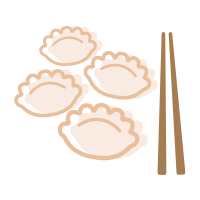
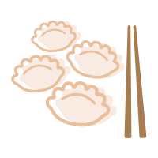

民间传说
每逢佳节，家家户户都要在屋门上、墙壁上、门楣上贴上大大小小的"福"字。春节贴""字，是我国民间由来已久的风俗。据《梦梁录》记载:"岁旦在迩，席铺百货，画门神桃符，迎春牌儿……";"士庶家不论大小，俱洒扫门闾，去尘秽，净庭户，换门神，挂钟馗，钉桃符，贴春牌，祭祀祖宗"。文中的"

 "即是写在红纸上的"福"字。
汉字是最常见的一种挥春，单从字面解释，汉字是祈求一口田，衣禄全，因为以前的人认为安居乐业就是有福。人们在习惯在春节贴汉字，还源于一个美丽的传说。当年姜太公封神的时候，他的老婆也前来讨封。姜太公一身正气，哪里容得，便生气地把他老婆封了一个"穷神"，并限制她不得到有"福"字人家去串门。封穷神这一天正是旧岁除夕。百姓知道了这个情节，于是家家户户在门上贴了"福"字，不让穷神进家门。民间还有将"福"字精描细做成各种图案的，图案有寿星、寿桃、鲤鱼跳龙门、五谷丰登、龙凤呈祥等。过去民间有"腊月二十四，家家写大字"的说法，"福"字以前多为手写，现在市场、商店中均中出售。春节倒贴大红"福"字，这是中国福文化的一个传统习俗。
"即是写在红纸上的"福"字。
汉字是最常见的一种挥春，单从字面解释，汉字是祈求一口田，衣禄全，因为以前的人认为安居乐业就是有福。人们在习惯在春节贴汉字，还源于一个美丽的传说。当年姜太公封神的时候，他的老婆也前来讨封。姜太公一身正气，哪里容得，便生气地把他老婆封了一个"穷神"，并限制她不得到有"福"字人家去串门。封穷神这一天正是旧岁除夕。百姓知道了这个情节，于是家家户户在门上贴了"福"字，不让穷神进家门。民间还有将"福"字精描细做成各种图案的，图案有寿星、寿桃、鲤鱼跳龙门、五谷丰登、龙凤呈祥等。过去民间有"腊月二十四，家家写大字"的说法，"福"字以前多为手写，现在市场、商店中均中出售。春节倒贴大红"福"字，这是中国福文化的一个传统习俗。
不可倒贴字
民间有倒贴汉字的说法，主要是取其谐音"福倒( )了"。然而，在中国的汉字中，有两个汉字是不可以倒贴的，一个是康熙御笔的"天下第一福"，另一个是"人间第一福"。这两个"福"字中的"田"字都是封口，寓意为"福禄无边"，这未封口的"田"字倒贴以后，便有"
)了"。然而，在中国的汉字中，有两个汉字是不可以倒贴的，一个是康熙御笔的"天下第一福"，另一个是"人间第一福"。这两个"福"字中的"田"字都是封口，寓意为"福禄无边"，这未封口的"田"字倒贴以后，便有" "字当头的不祥寓意，故此不宜倒贴。
"字当头的不祥寓意，故此不宜倒贴。